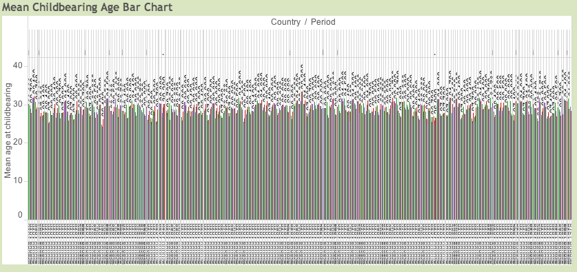
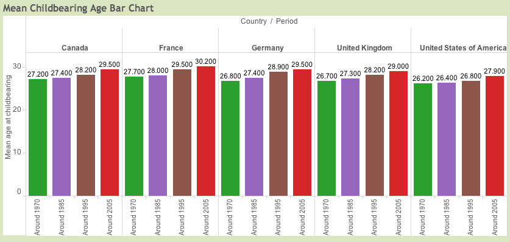
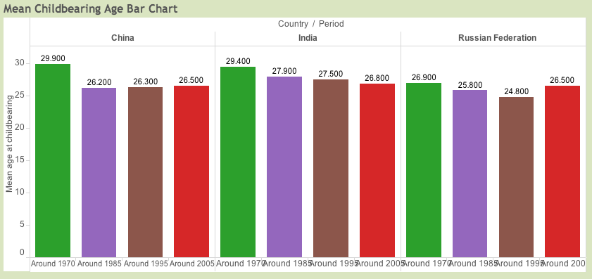
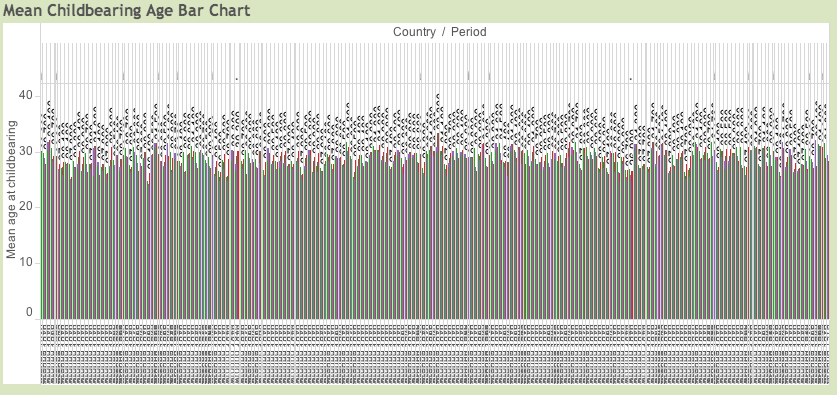
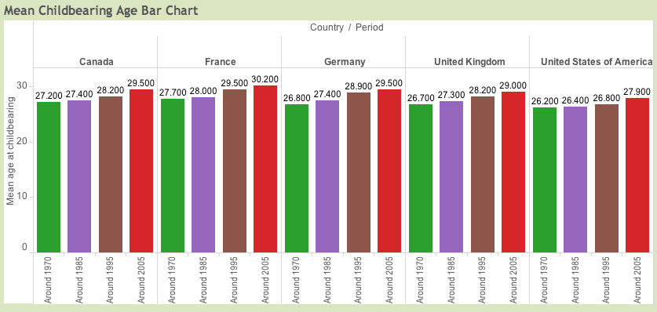
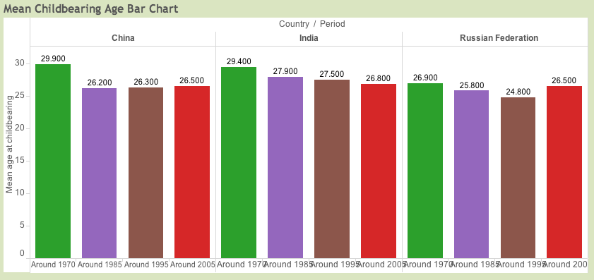

The Dataset
The first thing that I needed to do was pick a dataset. I have chosen this dataset because I have an anthropological interest in childbearing in general. I would also love to work with a nonprofit organization someday and this seemed like a dataset that I would run into at a job like that. Initially this data set seemed ideal. It lists, by country, the fertility of the female population (as defined here ). It also gives mean age of childbearing for each country. This data came from a study that spanned five different reference dates: 1970, 1985, 1995, 2005, and the most recent data available.
Initially looking at this data I decided that my question would be “Is there consistency in this data across all of the different countries in this study?” As I started to explore the data I realized that this was a far to general question. I realized that I needed to focus on a more specific factor in this fertility data. I decided that I would look at the international trends by the specific age ranges.
Although this data set seemed to be ideal, it provided some interesting obstacles. When loading the data set into Tableau and starting to work with this data I noticed that the specific age ranges were each their own column. This made them very difficult to work with. As I will discuss below, it was my design to set up a map and filter by age. I could not easily setup a filter because the age ranges were not their own field but separate measures. I looked into some sort of join clause or even making a sheet for each age range and creating an action filter, to no avail. I finally abandoned utilizing the specific age ranges. This lead to me changing my question to "What are the trends of childbearing age over the five reference dates?"
The other obstacle this data provided was that the countries would not automatically work as geographic data in Tableau. As I was working with trying to get this information on the map I realized that I needed latitude and longitude for each country. In order to get the latitude and longitude I wrote the following code for Google Apps Script.
In the end this set of information proved most adequate. And I think that I learned alot from it.
Initially looking at this data I decided that my question would be “Is there consistency in this data across all of the different countries in this study?” As I started to explore the data I realized that this was a far to general question. I realized that I needed to focus on a more specific factor in this fertility data. I decided that I would look at the international trends by the specific age ranges.
Although this data set seemed to be ideal, it provided some interesting obstacles. When loading the data set into Tableau and starting to work with this data I noticed that the specific age ranges were each their own column. This made them very difficult to work with. As I will discuss below, it was my design to set up a map and filter by age. I could not easily setup a filter because the age ranges were not their own field but separate measures. I looked into some sort of join clause or even making a sheet for each age range and creating an action filter, to no avail. I finally abandoned utilizing the specific age ranges. This lead to me changing my question to "What are the trends of childbearing age over the five reference dates?"
The other obstacle this data provided was that the countries would not automatically work as geographic data in Tableau. As I was working with trying to get this information on the map I realized that I needed latitude and longitude for each country. In order to get the latitude and longitude I wrote the following code for Google Apps Script.
function findLatLong() {
var sheet = SpreadsheetApp.getActiveSpreadsheet().getActiveSheet();
//I changed rowStart every time I ran it at 50 line intervals
var rowStart = 1045;
var countryNames = sheet.getRange(rowStart, 1, 34, 1).getValues();
var geoResults, lat, lng;
for (var i=0; i < countryNames.length; i++) {
geoResults = Maps.newGeocoder().geocode(countryNames[i][0]);
//get longitude and latitude
lng = geoResults.results[0].geometry.location.lng;
lat = geoResults.results[0].geometry.location.lat;
sheet.getRange(i+rowStart,2).setValue(lng);
sheet.getRange(i+rowStart,3).setValue(lat);
}
}
function foo () {
}
I then used this script on my data in Google Docs and was able to retrieve all of the latitude and longitude coordinates I needed in in my dataset. In the end this set of information proved most adequate. And I think that I learned alot from it.
Learning Tableau
Learning Tableau was a pretty good experience. There is a substantial amount of material on the internet that has been generated to help those of us who are just starting with Tableau. I watched several videos on YouTube and read several pdf's on Tableau's. Listed below are a few of my favorites resources:
Being completely unexposed to Tableau, I found the user experience to be quite intuitive. It would suggest certain visualizations based on the data that I provided. This was quite helpful. As you can see throught this journal I had my fair share of dificulties with Tableau. That said, my overall experience was quite good.
In the end the my favorite features of Tableau is the ability to be able to publish your workbooks to Tableau Public. Using this feature I have been able to publish my workbooks here on my website.
- A YouTube Playlist with Several Tutorials
- A Quite Exhaustive Tutorial on YouTube
- Tableau's Quickstart Guide
- Tableau 8 Official Guidebook
Being completely unexposed to Tableau, I found the user experience to be quite intuitive. It would suggest certain visualizations based on the data that I provided. This was quite helpful. As you can see throught this journal I had my fair share of dificulties with Tableau. That said, my overall experience was quite good.
In the end the my favorite features of Tableau is the ability to be able to publish your workbooks to Tableau Public. Using this feature I have been able to publish my workbooks here on my website.
Formulating A Visualization
Looking at the images below for inspiration I decided to create a map.


This map would have a dot on every location that I had data on and size of that dot would be determined by the fertility rate. I wanted to have a legend that would also act as a filter, allowing the user to choose which age specific rage they wanted to view. However when I started using Tableau I realized that both Tableau and my knowledge had certain limitations. As I mentioned before creating a filter for specific age ranges proved problematic because the age specific ranges were all separate measures and not measured by one field. I am sure there might be a way to join these measures using some sort of a join clause but in my reading of tutorials, watching videos, and Googling I never found it. In the end this turned out to be a good thing because it made me rethink my question and I arrived at a new question for which a cleaner visualization could be created.
I scrapped two separate visualizations in working towards my final product. The first was a the map that I described above. It had a circle placed on each country that had a size determined by the fertility of that country. As you can see this visualization was very difficult to read and far from the clean visualization that I had hoped to create. The second was a bar graph with all of the countries on the x-axis with the fertility values on the y-axis. I scrapped this one because I changed my question to "What are the trends of childbearing age over the five reference dates?" and it didn't portray my data very well. It is interesing to note that both of these scrapped attempts directly led to the two sheets that composed my final dashboard.
Looking back on my formulation of this visualization I must say that I don't think that Tableau would be my choice for a visualization generating tool. I know that my own limitations were the prime reason for my "vision" not being realized and that with time and familiarity I would be able to do much more with it. I recognize that. However, that being said, Tableau seemed limiting. It felt as though Tableau stood between me and the visualization that I had imagined. There will always be this sort of barrier with any tool that I use, but I feel like with other, more open tools the barrier is not impenetrable.
I scrapped two separate visualizations in working towards my final product. The first was a the map that I described above. It had a circle placed on each country that had a size determined by the fertility of that country. As you can see this visualization was very difficult to read and far from the clean visualization that I had hoped to create. The second was a bar graph with all of the countries on the x-axis with the fertility values on the y-axis. I scrapped this one because I changed my question to "What are the trends of childbearing age over the five reference dates?" and it didn't portray my data very well. It is interesing to note that both of these scrapped attempts directly led to the two sheets that composed my final dashboard.
Looking back on my formulation of this visualization I must say that I don't think that Tableau would be my choice for a visualization generating tool. I know that my own limitations were the prime reason for my "vision" not being realized and that with time and familiarity I would be able to do much more with it. I recognize that. However, that being said, Tableau seemed limiting. It felt as though Tableau stood between me and the visualization that I had imagined. There will always be this sort of barrier with any tool that I use, but I feel like with other, more open tools the barrier is not impenetrable.
Final Product
Upon deciding to change my question the final time I used the bar graphs to examine the trends in the data. I decided to use a filter to allow the user to select only the countries that they wanted to view. I originally had all of the countries displayed and, as you can see below, the data was unreadable.

This led me to apply the multiple value filter. The downside to this is that you can only analyze the question for the countries that are displayed. Were I to do it again I would try to find a way to implement a horizontal scroll so that the user could slide across the whole array of countries. In addition to the bar chart. I also used a map to analyze mean childbirth age across the world. This allows the user to easily view trends across the globe but doesn't really work towards seeing the trend in childbearing age over the reference points. Together I feel that the two sheets combine to make a great answer to the question. The data reveals that in some countries there is a upward trend in childbearing age. These seem to be more "westernized" nations.

And in other more eastern cultures we see the opposite trend.

In order to make a firm conclusion I suspect that we would need more data, especially in the case of the "non-westernized" nations as the trends are not asstrong. However in the first set there is a clear trend. I have published my final workbook and dashboard here.

This led me to apply the multiple value filter. The downside to this is that you can only analyze the question for the countries that are displayed. Were I to do it again I would try to find a way to implement a horizontal scroll so that the user could slide across the whole array of countries. In addition to the bar chart. I also used a map to analyze mean childbirth age across the world. This allows the user to easily view trends across the globe but doesn't really work towards seeing the trend in childbearing age over the reference points. Together I feel that the two sheets combine to make a great answer to the question. The data reveals that in some countries there is a upward trend in childbearing age. These seem to be more "westernized" nations.

And in other more eastern cultures we see the opposite trend.

In order to make a firm conclusion I suspect that we would need more data, especially in the case of the "non-westernized" nations as the trends are not asstrong. However in the first set there is a clear trend. I have published my final workbook and dashboard here.